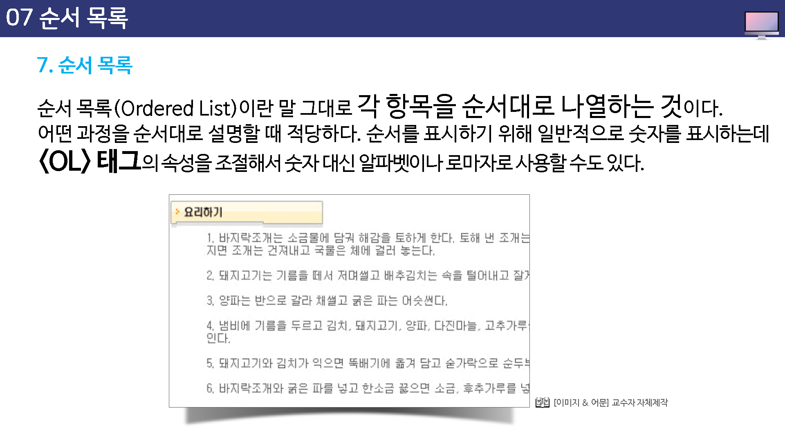
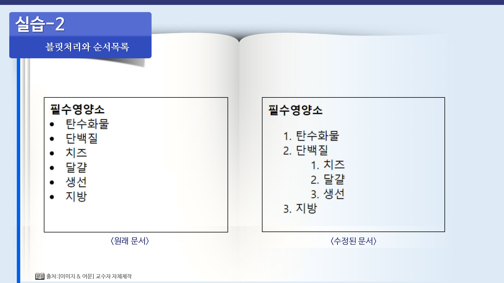
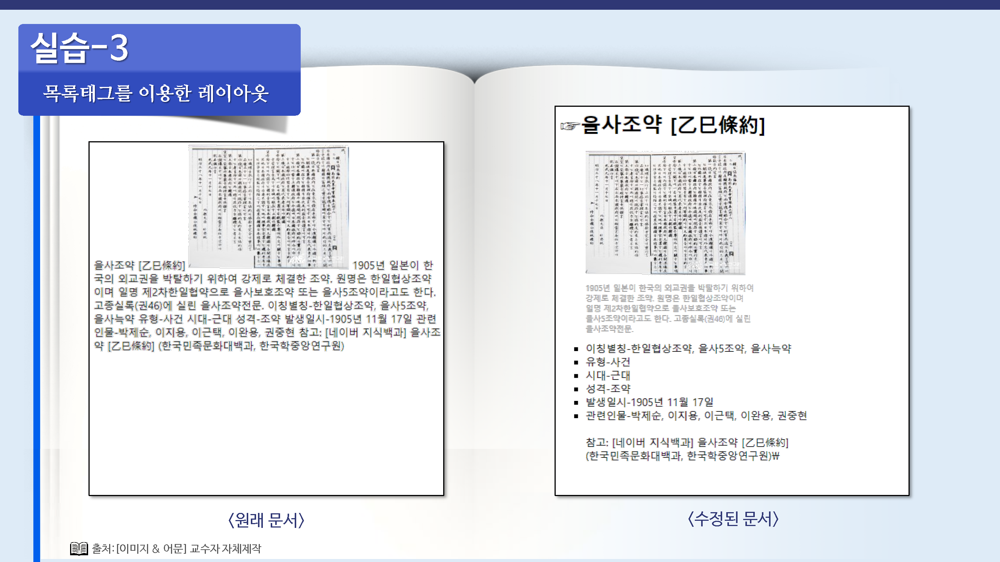

순서 목록
순서 목록 (ordered list)이란 말 그대로 각 항목을 순서대로 나열하는 것이다.
어떤 과정을 순서대로 설명할 때 적당하다.
순서를 표시하기 위해 일반적으로 숫자를 표시하는데, <ol>태그의 속성을 조절해서 숫자 대신 알파벳이나 로마자로 사용할 수도 있다.

ol테그와 li테그
순서 목록을 만들때 사용하는 태그는 <ol>과 <li>이다.
목록으로 표시할 내용의 앞 뒤에 <ol> 태그를 적고 각 항목 앞에 <li>를 생략할 경우 <li>뒤부터 다음 <li>이전까지가 하나의 항목이 된다.
<ol>
<li>항목1</li>
<li>항목2</li>
<li>항목3</li>
</ol>
순서 목록에서는 <ol>태그의 type 속성과 start 속성을 이용해서 각 항목 앞에 붙는 번호나 시작 번호를 조절할 수 있다.
type
각 항목 앞에 붙이는 숫자를 영문자나 로마자, 또는 아라비아 숫자로 표시한다.
사용할 수 있는 속성값은 A,a,I,i이다.
따로 이 속성을 지정하지 않으면 숫자로 표시된다.

start
각 항목 앞에 붙는 숫자의 시작 번호를 지정한다.



